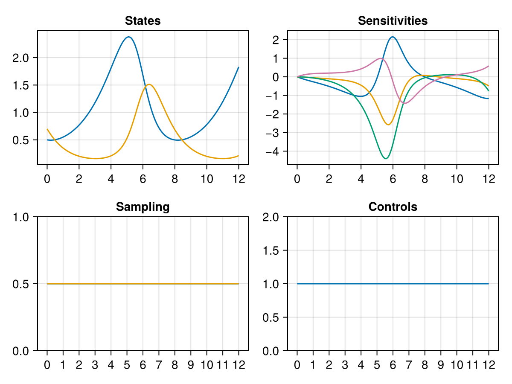
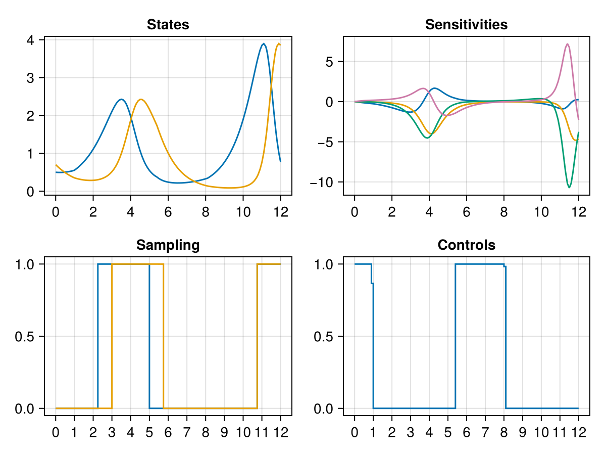
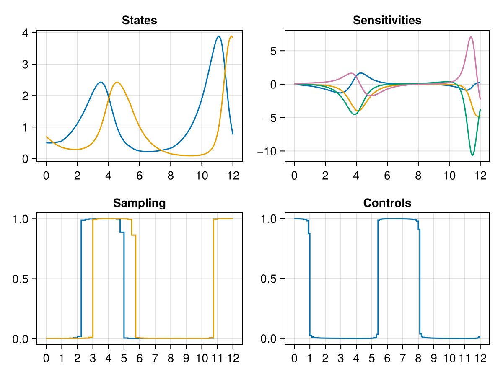

Lotka-Volterra OED
This is a quick intro based on the Lotka Volterra Experimental Design Problem. The goal here is to design experiments which yield data with which the model parameters can be estimated with low uncertainty. The degrees of freedom are the fishing control as before in the Lotka OC example. However, in OED problems also the decision when to perform measurements are addressed.
In mathematical terms, the problem we want to solve reads
\[\begin{aligned} \min_{x,G,F,z,u,w} & \phi(F(t_f)) \\ \text{s.t.} \quad & \dot{x}(t) = f(x,p,t),\\ & \dot{G}(t) = f_x(x,p,t) G(t) + f_p(x,p,t), \\ & \dot{F}(t) = \sum_{i=1}^{n_h} w^i(t) (h_x^i(\cdot) G(t))^\top h_x^i(\cdot) G(t), \\ & \dot{z}(t) = w(t), \\ & x(0) = x_0, \\ & G(0) = F(0) = 0, \\ & z(t_f) \le M, \end{aligned}\]
where $F$ denotes the Fisher information matrix, $G$ the sensitivities with respect to the parameters, $z$ the accumulated sampling decisions with upper bounds $M$, $h$ the measurement functions specifying what can be measured. The variables $w$ can be seen as controls whether or not to measure a specific quantity at a certain point in time. The objective is given by $\phi$ as a suitable criterion to optimize, e.g., the ACriterion.
Setup
We will use Corleone and CorleoneOED to model the optimal experimental design problem.
using Corleone, CorleoneOEDAdditionally, we will need the following packages
LuxCoreandRandomfor basic setup functionsOrdinaryDiffEqTsit5as an adaptive solver for the related ODEProblemSymbolicIndexingInterfaceto conveniently access variables and controls of the solutionOptimization,OptimizationMOI,Ipopt, andComponentArraysto setup and solve the optimization problemCairoMakieto plot the solution
using LuxCore
using Random
using OrdinaryDiffEqTsit5
using SymbolicIndexingInterface
using Optimization
using OptimizationMOI
using Ipopt
using ComponentArrays
using CairoMakieLotka Volterrra Dynamics
function lotka_dynamics(du, u, p, t)
du[1] = u[1] - p[2] * prod(u[1:2]) - 0.4 * p[1] * u[1]
du[2] = -u[2] + p[3] * prod(u[1:2]) - 0.2 * p[1] * u[2]
return
end
tspan = (0.0, 12.0)
u0 = [0.5, 0.7]
p0 = [0.0, 1.0, 1.0]
prob = ODEProblem(lotka_dynamics, u0, tspan, p0)ODEProblem with uType Vector{Float64} and tType Float64. In-place: true
Non-trivial mass matrix: false
timespan: (0.0, 12.0)
u0: 2-element Vector{Float64}:
0.5
0.7Construct the OEDLayer
For optimal experimental design problems, CorleoneOED provides the OEDLayer. Like the SingleShootingLayer and the MultipleShootingLayer, the OEDLayer is a callable layer, that integrates the problem with the specified integrator and applies the piecewise constant controls to it. The OEDLayer however also adds to the dynamical system the differential states and differential equations for a) the forward sentitivities of the solution with respect to the parameters and b) the Fisher information matrix. To construct it, we again define first the piecewise constant control discretization on a control grid.
cgrid = collect(0.0:0.1:11.9)
control = ControlParameter(
cgrid, name = :fishing, bounds = (0.0, 1.0), controls = ones(length(cgrid))
)ControlParameter{Vector{Float64}, Vector{Float64}, Tuple{Float64, Float64}}(:fishing, [0.0, 0.1, 0.2, 0.3, 0.4, 0.5, 0.6, 0.7, 0.8, 0.9, 1.0, 1.1, 1.2, 1.3, 1.4, 1.5, 1.6, 1.7, 1.8, 1.9, 2.0, 2.1, 2.2, 2.3, 2.4, 2.5, 2.6, 2.7, 2.8, 2.9, 3.0, 3.1, 3.2, 3.3, 3.4, 3.5, 3.6, 3.7, 3.8, 3.9, 4.0, 4.1, 4.2, 4.3, 4.4, 4.5, 4.6, 4.7, 4.8, 4.9, 5.0, 5.1, 5.2, 5.3, 5.4, 5.5, 5.6, 5.7, 5.8, 5.9, 6.0, 6.1, 6.2, 6.3, 6.4, 6.5, 6.6, 6.7, 6.8, 6.9, 7.0, 7.1, 7.2, 7.3, 7.4, 7.5, 7.6, 7.7, 7.8, 7.9, 8.0, 8.1, 8.2, 8.3, 8.4, 8.5, 8.6, 8.7, 8.8, 8.9, 9.0, 9.1, 9.2, 9.3, 9.4, 9.5, 9.6, 9.7, 9.8, 9.9, 10.0, 10.1, 10.2, 10.3, 10.4, 10.5, 10.6, 10.7, 10.8, 10.9, 11.0, 11.1, 11.2, 11.3, 11.4, 11.5, 11.6, 11.7, 11.8, 11.9], [1.0, 1.0, 1.0, 1.0, 1.0, 1.0, 1.0, 1.0, 1.0, 1.0, 1.0, 1.0, 1.0, 1.0, 1.0, 1.0, 1.0, 1.0, 1.0, 1.0, 1.0, 1.0, 1.0, 1.0, 1.0, 1.0, 1.0, 1.0, 1.0, 1.0, 1.0, 1.0, 1.0, 1.0, 1.0, 1.0, 1.0, 1.0, 1.0, 1.0, 1.0, 1.0, 1.0, 1.0, 1.0, 1.0, 1.0, 1.0, 1.0, 1.0, 1.0, 1.0, 1.0, 1.0, 1.0, 1.0, 1.0, 1.0, 1.0, 1.0, 1.0, 1.0, 1.0, 1.0, 1.0, 1.0, 1.0, 1.0, 1.0, 1.0, 1.0, 1.0, 1.0, 1.0, 1.0, 1.0, 1.0, 1.0, 1.0, 1.0, 1.0, 1.0, 1.0, 1.0, 1.0, 1.0, 1.0, 1.0, 1.0, 1.0, 1.0, 1.0, 1.0, 1.0, 1.0, 1.0, 1.0, 1.0, 1.0, 1.0, 1.0, 1.0, 1.0, 1.0, 1.0, 1.0, 1.0, 1.0, 1.0, 1.0, 1.0, 1.0, 1.0, 1.0, 1.0, 1.0, 1.0, 1.0, 1.0, 1.0], (0.0, 1.0))Now, there are different possibilities to construct the OEDLayer. It can be constructed either directly from the ODEProblem, or we can first build a SingleShootingLayer from the problem and with that the OEDLayer. In both cases, we need to specify some further details. First, the parameters that need to be estimated need to be specified via the keyworded argument params. Second, the measurement functions $h(x,p,t)$, defining what quantities can be measured, are added via the keyworded argument observed, which takes a function specifying the measurements. Lastly, The keyworded argument measurements specifies the discretization of the sampling controls $w$ associated with the measurement functions.
oed = OEDLayer{false}(
prob, Tsit5(),
params = [2, 3],
controls = (1 => control,),
bounds_p = ([1.0, 1.0], [1.0, 1.0]),
observed = (u, p, t) -> u[1:2],
measurements = [
ControlParameter(collect(0.0:0.25:11.75), controls = 0.5 * ones(48), bounds = (0.0, 1.0)),
ControlParameter(collect(0.0:0.25:11.75), controls = 0.5 * ones(48), bounds = (0.0, 1.0)),
],
)
layer = Corleone.SingleShootingLayer(prob, Tsit5(), controls = (1 => control,), bounds_p = ([1.0, 1.0], [1.0, 1.0]))
oed = OEDLayer{false}(
layer,
params = [2, 3],
measurements = [
ControlParameter(collect(0.0:0.25:11.75), controls = 0.5 * ones(48), bounds = (0.0, 1.0)),
ControlParameter(collect(0.0:0.25:11.75), controls = 0.5 * ones(48), bounds = (0.0, 1.0)),
],
observed = (u, p, t) -> u[1:2],
)OEDLayer with continuous measurement model and 2 observed functions.
Underlying problem: ODEProblem with uType Vector{Float64} and tType Float64. In-place: true
Non-trivial mass matrix: false
timespan: (0.0, 12.0)
u0: 9-element Vector{Float64}:
0.5
0.7
0.0
0.0
0.0
0.0
0.0
0.0
0.0Investigate the capabilities of the OEDLayer
As said above, calling the layer with the appropriate arguments integrates the augmented dynamical system. Setting up the OEDLayer gives the parameters of the layer, i.e., the discretized controls, sampling controls, initial values and parameters of the problem that may be optimized.
ps, st = LuxCore.setup(Random.default_rng(), oed)
sol, _ = oed(nothing, ps, st)
function plot_oed(sol)
f = Figure()
ax = CairoMakie.Axis(f[1, 1], xticks = 0:2:12, title = "States")
ax2 = CairoMakie.Axis(f[1, 2], xticks = 0:2:12, title = "Sensitivities")
ax3 = CairoMakie.Axis(f[2, 1], xticks = 0:1:12, title = "Sampling")
ax4 = CairoMakie.Axis(f[2, 2], xticks = 0:1:12, title = "Controls")
plot!(ax, sol, idxs = [1, 2])
plot!(ax2, sol, idxs = [3, 4, 5, 6])
stairs!(ax3, sol, vars = [:w₁, :w₂])
stairs!(ax4, sol, vars = [:p₁])
return f
end
plot_oed(sol)
Moreover, CorleoneOED provides functionalities to directly calculate the Fisher information matrix for current iterates.
fim, _ = CorleoneOED.fisher_information(oed, nothing, ps, st)
fim2×2 Matrix{Float64}:
8.44473 -3.37335
-3.37335 16.5714Set up and solve the problem
With the OEDLayer set up, we can define the OptimizationProblem in one line by giving a suitable criterion to minimize, e.g., the DCriterion. Here, the determinant of the inverse of the Fisher information matrix is minimized. An upper bound M on the maximum time of measurements is specified via M.
optprob = OptimizationProblem(oed, DCriterion(); M = [4.0, 4.0])
uopt = solve(
optprob, Ipopt.Optimizer(),
tol = 1.0e-8,
hessian_approximation = "limited-memory",
max_iter = 300
);This is Ipopt version 3.14.19, running with linear solver MUMPS 5.9.0.
Number of nonzeros in equality constraint Jacobian...: 0
Number of nonzeros in inequality constraint Jacobian.: 432
Number of nonzeros in Lagrangian Hessian.............: 0
Total number of variables............................: 216
variables with only lower bounds: 0
variables with lower and upper bounds: 216
variables with only upper bounds: 0
Total number of equality constraints.................: 0
Total number of inequality constraints...............: 2
inequality constraints with only lower bounds: 0
inequality constraints with lower and upper bounds: 2
inequality constraints with only upper bounds: 0
iter objective inf_pr inf_du lg(mu) ||d|| lg(rg) alpha_du alpha_pr ls
0 7.7891959e-03 2.00e+00 2.08e-03 0.0 0.00e+00 - 0.00e+00 0.00e+00 0
1 1.7253260e-02 0.00e+00 4.32e-01 -1.0 1.67e-01 - 8.67e-01 1.00e+00f 1
2 1.7075032e-02 0.00e+00 6.45e-03 -3.0 3.47e-03 - 9.85e-01 1.00e+00f 1
3 1.2202016e-02 0.00e+00 9.86e-04 -3.3 1.38e-01 - 8.58e-01 1.00e+00f 1
4 6.7155832e-03 0.00e+00 5.31e-04 -3.6 2.72e-01 - 9.96e-01 1.00e+00f 1
5 3.2498179e-03 0.00e+00 3.60e-04 -4.1 3.66e-01 - 9.97e-01 1.00e+00f 1
6 1.7912891e-03 0.00e+00 1.48e-04 -4.7 3.13e-01 - 9.97e-01 1.00e+00f 1
7 1.0747124e-03 0.00e+00 9.14e-05 -5.4 1.86e-01 - 9.81e-01 1.00e+00f 1
8 6.6213669e-04 0.00e+00 5.51e-05 -5.9 1.86e-01 - 9.94e-01 9.82e-01f 1
9 4.7091358e-04 0.00e+00 2.97e-05 -6.5 3.06e-01 - 1.00e+00 9.15e-01f 1
iter objective inf_pr inf_du lg(mu) ||d|| lg(rg) alpha_du alpha_pr ls
10 4.2724678e-04 0.00e+00 2.95e-05 -7.0 2.72e-01 - 1.00e+00 3.74e-01f 1
11 3.6509242e-04 0.00e+00 1.60e-05 -6.8 9.24e-01 - 1.00e+00 4.32e-01f 1
12 5.0516392e-04 0.00e+00 2.52e-05 -5.4 1.54e+00 - 4.40e-01 3.22e-01f 1
13 4.4473182e-04 0.00e+00 1.20e-05 -5.8 8.06e-01 - 1.00e+00 6.15e-01f 1
14 3.5125845e-04 0.00e+00 2.57e-05 -8.7 5.68e-01 - 3.81e-01 9.48e-01f 1
15 3.3511581e-04 0.00e+00 1.30e-05 -6.4 6.79e-01 - 9.95e-01 5.46e-01f 1
16 3.2593240e-04 0.00e+00 9.95e-06 -6.7 2.80e-01 - 9.96e-01 3.33e-01f 1
17 3.2268471e-04 0.00e+00 2.42e-06 -6.4 2.22e-01 - 1.00e+00 1.00e+00f 1
18 3.0401510e-04 0.00e+00 3.13e-06 -6.6 3.82e-01 - 8.68e-01 1.00e+00f 1
19 2.9794202e-04 0.00e+00 2.26e-06 -6.9 4.29e-01 - 9.96e-01 3.04e-01f 1
iter objective inf_pr inf_du lg(mu) ||d|| lg(rg) alpha_du alpha_pr ls
20 2.8417791e-04 0.00e+00 1.46e-06 -7.2 9.47e-01 - 1.00e+00 5.53e-01f 1
21 2.7680375e-04 0.00e+00 1.74e-06 -7.3 7.91e-01 - 9.78e-01 5.63e-01f 1
22 2.7149392e-04 0.00e+00 5.89e-06 -7.4 3.65e-01 - 9.92e-01 7.40e-01f 1
23 2.6884494e-04 0.00e+00 3.63e-06 -7.6 1.18e-01 - 1.00e+00 6.93e-01f 1
24 2.6515804e-04 0.00e+00 2.57e-06 -7.8 4.61e-01 - 1.00e+00 1.00e+00f 1
25 2.6502262e-04 0.00e+00 8.02e-07 -7.8 2.24e-01 - 9.76e-01 3.95e-01h 2
26 2.6293978e-04 0.00e+00 5.63e-07 -8.2 2.54e-01 - 9.99e-01 9.66e-01f 1
27 2.6403205e-04 0.00e+00 5.87e-07 -7.9 2.54e-01 - 1.00e+00 1.00e+00f 1
28 2.6353749e-04 0.00e+00 2.97e-06 -8.0 1.47e-01 - 1.00e+00 1.00e+00f 1
29 2.6347882e-04 0.00e+00 3.62e-06 -8.0 2.52e-01 - 1.00e+00 1.00e+00h 1
iter objective inf_pr inf_du lg(mu) ||d|| lg(rg) alpha_du alpha_pr ls
30 2.6341327e-04 0.00e+00 1.63e-06 -8.0 5.62e-02 - 1.00e+00 1.00e+00h 1
31 2.6341317e-04 0.00e+00 1.22e-06 -8.0 1.24e-06 - 1.00e+00 1.00e+00h 1
32 2.6340475e-04 0.00e+00 8.30e-08 -8.0 1.47e-03 - 1.00e+00 1.00e+00h 1
33 2.6212984e-04 0.00e+00 5.44e-07 -9.0 8.11e-02 - 9.59e-01 7.37e-01f 1
34 2.6194191e-04 0.00e+00 4.26e-07 -9.7 2.75e-01 - 1.00e+00 1.71e-01f 1
35 2.6148283e-04 0.00e+00 1.06e-07 -10.5 9.35e-02 - 1.00e+00 6.39e-01f 1
36 2.6125736e-04 0.00e+00 7.97e-08 -10.2 2.64e-02 - 1.00e+00 1.00e+00f 1
37 2.6124359e-04 0.00e+00 1.78e-08 -11.0 2.43e-03 - 1.00e+00 1.00e+00h 1
38 2.6124355e-04 0.00e+00 1.01e-08 -11.0 1.02e-02 - 1.00e+00 1.00e+00h 1
39 2.6124352e-04 0.00e+00 1.66e-08 -11.0 9.90e-03 - 1.00e+00 1.00e+00h 1
iter objective inf_pr inf_du lg(mu) ||d|| lg(rg) alpha_du alpha_pr ls
40 2.6124351e-04 0.00e+00 4.20e-09 -11.0 6.42e-03 - 1.00e+00 1.00e+00h 1
Number of Iterations....: 40
(scaled) (unscaled)
Objective...............: 2.6124351185348102e-04 2.6124351185348102e-04
Dual infeasibility......: 4.2044844710109456e-09 4.2044844710109456e-09
Constraint violation....: 0.0000000000000000e+00 0.0000000000000000e+00
Variable bound violation: 0.0000000000000000e+00 0.0000000000000000e+00
Complementarity.........: 1.0000000000024542e-11 1.0000000000024542e-11
Overall NLP error.......: 4.2044844710109456e-09 4.2044844710109456e-09
Number of objective function evaluations = 42
Number of objective gradient evaluations = 41
Number of equality constraint evaluations = 0
Number of inequality constraint evaluations = 42
Number of equality constraint Jacobian evaluations = 0
Number of inequality constraint Jacobian evaluations = 41
Number of Lagrangian Hessian evaluations = 0
Total seconds in IPOPT = 48.189
EXIT: Optimal Solution Found.
After solving, we now only need to investigate the solution.
optsol, _ = oed(nothing, uopt + zero(ComponentArray(ps)), st)
plot_oed(optsol)
Updating the FIM with previously run experiments
Assuming that OED is used iteratively in a measurement campaign during which parameter estimation and OED are alternatingly used, one is interested in updating the FIM in the current iteration of OED with the previously run experiments, but for the current parameter values. CorleoneOED provides this functionality via the state st of the OEDLayer in which the initial value of the Fisher information matrix is stored. Per default, the FIM is initialized with zeros.
st.F_init2×2 Matrix{Float64}:
0.0 0.0
0.0 0.0However, with the solution from above it can be updated easily
previous_experiment = (ps = uopt.u + zero(ComponentArray(ps)), st = st)
st_new = CorleoneOED.update_fim(oed, [previous_experiment], st)
st_new.F_init2×2 Matrix{Float64}:
33.4904 -9.82785
-9.82785 117.181Now, the optimization problem can be remaked and solved with the updated state.
optprob = remake(optprob, p = st_new)
uopt = solve(
optprob, Ipopt.Optimizer(),
tol = 1.0e-8,
hessian_approximation = "limited-memory",
max_iter = 300
);This is Ipopt version 3.14.19, running with linear solver MUMPS 5.9.0.
Number of nonzeros in equality constraint Jacobian...: 0
Number of nonzeros in inequality constraint Jacobian.: 432
Number of nonzeros in Lagrangian Hessian.............: 0
Total number of variables............................: 216
variables with only lower bounds: 0
variables with lower and upper bounds: 216
variables with only upper bounds: 0
Total number of equality constraints.................: 0
Total number of inequality constraints...............: 2
inequality constraints with only lower bounds: 0
inequality constraints with lower and upper bounds: 2
inequality constraints with only upper bounds: 0
iter objective inf_pr inf_du lg(mu) ||d|| lg(rg) alpha_du alpha_pr ls
0 1.8404378e-04 2.00e+00 7.31e-06 0.0 0.00e+00 - 0.00e+00 0.00e+00 0
1 2.0502137e-04 0.00e+00 4.34e-01 -1.0 1.67e-01 - 8.67e-01 1.00e+00f 1
2 2.0502108e-04 0.00e+00 4.34e-03 -6.9 4.29e-06 - 9.90e-01 1.00e+00h 1
3 1.9519799e-04 0.00e+00 6.15e-06 -3.0 2.26e-01 - 1.00e+00 1.00e+00f 1
4 1.9514543e-04 0.00e+00 2.21e-08 -9.0 6.07e-04 - 9.97e-01 1.00e+00h 1
5 1.7161970e-04 0.00e+00 2.88e-06 -5.9 3.08e-01 - 9.91e-01 1.00e+00f 1
6 1.3931501e-04 0.00e+00 2.62e-06 -6.4 4.19e-01 - 8.54e-01 1.00e+00f 1
7 1.1846738e-04 0.00e+00 4.26e-06 -6.6 4.01e-01 - 9.87e-01 7.70e-01f 1
8 9.4291184e-05 0.00e+00 2.94e-06 -6.8 4.39e-01 - 9.81e-01 6.76e-01f 1
9 8.0764586e-05 0.00e+00 1.40e-06 -7.2 2.33e-01 - 9.95e-01 8.41e-01f 1
iter objective inf_pr inf_du lg(mu) ||d|| lg(rg) alpha_du alpha_pr ls
10 8.0306395e-05 0.00e+00 1.15e-06 -7.0 5.27e-01 - 8.51e-01 9.65e-01f 1
11 7.6754957e-05 0.00e+00 8.90e-07 -7.2 4.75e-01 - 9.49e-01 7.38e-01f 1
12 7.2235673e-05 0.00e+00 5.68e-07 -7.5 4.81e-01 - 8.75e-01 1.00e+00f 1
13 7.1922952e-05 0.00e+00 2.21e-07 -7.6 6.54e-01 - 9.91e-01 1.37e-01f 2
14 6.9843273e-05 0.00e+00 1.91e-07 -7.7 6.75e-01 - 9.86e-01 7.59e-01f 1
15 6.8931373e-05 0.00e+00 2.69e-07 -8.0 6.84e-01 - 9.95e-01 4.07e-01f 1
16 6.8931020e-05 0.00e+00 4.37e-05 -11.0 4.38e-05 - 1.00e+00 1.00e+00h 1
17 6.8485373e-05 0.00e+00 3.46e-05 -10.9 2.51e+00 - 2.00e-01 2.92e-03f 1
18 6.8098421e-05 0.00e+00 1.71e-06 -11.0 3.35e-01 - 1.00e+00 2.73e-02f 1
19 6.7901295e-05 0.00e+00 1.50e-06 -11.0 6.25e-01 - 1.00e+00 2.09e-02f 1
iter objective inf_pr inf_du lg(mu) ||d|| lg(rg) alpha_du alpha_pr ls
20 6.7399235e-05 0.00e+00 3.90e-06 -10.1 1.17e+00 - 1.00e+00 5.53e-02f 1
21 6.7114400e-05 0.00e+00 2.06e-06 -8.9 2.36e+00 - 1.00e+00 3.52e-02f 1
22 6.6761477e-05 0.00e+00 2.15e-07 -8.1 3.31e+00 - 1.00e+00 1.09e-01f 1
23 6.6498881e-05 0.00e+00 4.60e-07 -8.4 7.22e-01 - 9.97e-01 4.85e-01f 1
24 6.6306893e-05 0.00e+00 3.03e-07 -8.6 9.09e-01 - 1.00e+00 3.13e-01f 1
25 6.6032642e-05 0.00e+00 2.37e-07 -8.5 3.43e-01 - 1.00e+00 1.00e+00f 1
26 6.5969930e-05 0.00e+00 2.62e-07 -8.6 3.47e-01 - 1.00e+00 9.80e-01H 1
27 6.5969597e-05 0.00e+00 1.38e-04 -11.0 1.38e-04 - 1.00e+00 1.00e+00h 1
28 6.5768356e-05 0.00e+00 1.18e-04 -10.4 9.92e-01 - 1.42e-01 4.40e-03f 1
29 6.5660715e-05 0.00e+00 2.51e-07 -10.3 3.72e-01 - 1.00e+00 3.42e-02f 1
iter objective inf_pr inf_du lg(mu) ||d|| lg(rg) alpha_du alpha_pr ls
30 6.5647564e-05 0.00e+00 7.93e-07 -9.2 5.63e+00 - 1.00e+00 4.54e-03f 1
31 6.5577699e-05 0.00e+00 6.54e-07 -9.6 3.89e-01 - 1.00e+00 2.83e-01f 1
32 6.5407685e-05 0.00e+00 6.84e-07 -10.1 1.91e-01 - 1.00e+00 1.00e+00f 1
33 6.5383236e-05 0.00e+00 7.58e-07 -10.7 1.67e-01 - 1.00e+00 1.00e+00h 1
34 6.5383150e-05 0.00e+00 1.12e-06 -11.0 2.23e-06 - 1.00e+00 1.00e+00h 1
35 6.5381345e-05 0.00e+00 6.36e-07 -11.0 1.64e-02 - 4.37e-01 3.47e-01h 1
36 6.5354301e-05 0.00e+00 4.73e-07 -9.5 8.69e+00 - 2.94e-01 3.71e-02f 1
37 6.5343676e-05 0.00e+00 2.66e-07 -11.0 5.23e-01 - 7.10e-01 5.73e-01f 1
38 6.5342937e-05 0.00e+00 1.65e-07 -10.5 2.51e-01 - 5.47e-01 8.86e-02f 1
39 6.5342866e-05 0.00e+00 1.16e-03 -11.0 1.16e-03 - 1.00e+00 1.00e+00f 1
iter objective inf_pr inf_du lg(mu) ||d|| lg(rg) alpha_du alpha_pr ls
40 6.6107678e-05 0.00e+00 1.52e-04 -8.6 4.22e-01 - 8.69e-01 8.76e-01f 1
41 6.5858806e-05 0.00e+00 2.28e-07 -8.6 2.49e-01 - 1.00e+00 1.00e+00f 1
42 6.5853483e-05 0.00e+00 1.92e-07 -8.6 4.73e-01 - 7.88e-01 4.00e-01f 2
43 6.5837260e-05 0.00e+00 3.41e-08 -8.6 2.71e-01 - 1.00e+00 5.19e-01H 1
44 6.5835765e-05 0.00e+00 1.53e-08 -8.6 8.77e-02 - 1.00e+00 1.00e+00f 1
45 6.5512116e-05 0.00e+00 2.94e-08 -9.0 1.94e-01 - 1.00e+00 1.00e+00f 1
46 6.5505389e-05 0.00e+00 2.08e-08 -9.0 2.14e-02 - 1.00e+00 1.00e+00h 1
47 6.5505450e-05 0.00e+00 4.63e-09 -9.0 3.10e-03 - 1.00e+00 1.00e+00h 1
Number of Iterations....: 47
(scaled) (unscaled)
Objective...............: 6.5505450240596884e-05 6.5505450240596884e-05
Dual infeasibility......: 4.6308380442856137e-09 4.6308380442856137e-09
Constraint violation....: 0.0000000000000000e+00 0.0000000000000000e+00
Variable bound violation: 0.0000000000000000e+00 0.0000000000000000e+00
Complementarity.........: 9.1023017428204479e-10 9.1023017428204479e-10
Overall NLP error.......: 4.6308380442856137e-09 4.6308380442856137e-09
Number of objective function evaluations = 52
Number of objective gradient evaluations = 48
Number of equality constraint evaluations = 0
Number of inequality constraint evaluations = 52
Number of equality constraint Jacobian evaluations = 0
Number of inequality constraint Jacobian evaluations = 48
Number of Lagrangian Hessian evaluations = 0
Total seconds in IPOPT = 39.097
EXIT: Optimal Solution Found.
However, in this example, the solution is the same, as also the parameter values are unchanged.
optsol, _ = oed(nothing, uopt + zero(ComponentArray(ps)), st_new)
plot_oed(optsol)
Sampling-free OED
If the decisions about when to measure are not degrees of freedom, because, for example, continuous measurement is possible, the OEDLayer can also be constructed without discretizing the measurements. In this case, only the specified controls are degrees of freedom of the optimization.
oed = OEDLayer{false}(
prob, Tsit5(),
params = [2, 3],
controls = (1 => control,),
bounds_p = ([1.0, 1.0], [1.0, 1.0]),
observed = (u, p, t) -> u[1:2],
)OEDLayer without specified measurement model and 0 observed functions.
Underlying problem: ODEProblem with uType Vector{Float64} and tType Float64. In-place: true
Non-trivial mass matrix: false
timespan: (0.0, 12.0)
u0: 9-element Vector{Float64}:
0.5
0.7
0.0
0.0
0.0
0.0
0.0
0.0
0.0Appendix
This example was built using these direct dependencies,
using Pkg
Pkg.status()Status `~/work/Corleone.jl/Corleone.jl/docs/Project.toml`
[13f3f980] CairoMakie v0.15.14
[b0b7db55] ComponentArrays v0.15.48
[2751e0db] Corleone v0.0.8 `~/work/Corleone.jl/Corleone.jl`
[6590a4b1] CorleoneOED v0.0.9 `~/work/Corleone.jl/Corleone.jl/lib/CorleoneOED`
[e30172f5] Documenter v1.19.0
[daee34ce] DocumenterCitations v1.5.0
[d12716ef] DocumenterInterLinks v1.1.0
[f6369f11] ForwardDiff v1.4.5
[b6b21f68] Ipopt v1.15.0
[682c06a0] JSON v1.8.0
[2ddba703] Juniper v0.9.4
[98b081ad] Literate v2.21.0
[bb33d45b] LuxCore v1.5.3
[961ee093] ModelingToolkit v11.41.0
[d147904a] OptimalControlBenchmarks v0.0.3 `~/work/Corleone.jl/Corleone.jl/lib/OptimalControlBenchmarks`
[7f7a1694] Optimization v5.9.0
[22f7324a] OptimizationLBFGSB v1.5.1
[fd9f6733] OptimizationMOI v1.4.1
[b1df2697] OrdinaryDiffEqTsit5 v2.1.4
[2efcf032] SymbolicIndexingInterface v0.3.55
[ddb6d928] YAML v0.4.16
[9a3f8284] Random v1.11.0
and using this machine and Julia version.
using InteractiveUtils
InteractiveUtils.versioninfo()Julia Version 1.12.7
Commit 6d172b025e4 (2026-08-15 08:05 UTC)
Build Info:
Official https://julialang.org release
Platform Info:
OS: Linux (x86_64-linux-gnu)
CPU: 4 × AMD EPYC 9V45 96-Core Processor
WORD_SIZE: 64
LLVM: libLLVM-18.1.7 (ORCJIT, znver5)
GC: Built with stock GC
Threads: 1 default, 1 interactive, 1 GC (on 4 virtual cores)
A more complete overview of all dependencies and their versions is also provided.
using Pkg
Pkg.status(; mode = PKGMODE_MANIFEST)Status `~/work/Corleone.jl/Corleone.jl/docs/Manifest.toml`
[47edcb42] ADTypes v1.24.0
[14f7f29c] AMD v0.5.4
[a4c015fc] ANSIColoredPrinters v0.0.1
[621f4979] AbstractFFTs v1.5.0
[6e696c72] AbstractPlutoDingetjes v1.4.1
[1520ce14] AbstractTrees v0.4.5
[7d9f7c33] Accessors v0.1.45
[79e6a3ab] Adapt v4.7.0
[35492f91] AdaptivePredicates v1.2.0
[66dad0bd] AliasTables v1.1.3
[27a7e980] Animations v0.4.2
[ec485272] ArnoldiMethod v0.4.0
[4fba245c] ArrayInterface v7.30.1
[4c555306] ArrayLayouts v1.12.2
[67c07d97] Automa v1.2.0
[13072b0f] AxisAlgorithms v1.1.0
[39de3d68] AxisArrays v0.4.8
[aae01518] BandedMatrices v1.12.0
[198e06fe] BangBang v0.4.9
[18cc8868] BaseDirs v1.4.0
[6e4b80f9] BenchmarkTools v1.8.0
[2027ae74] BibInternal v0.4.0
[13533e5b] BibParser v0.3.0
[f1be7e48] Bibliography v0.4.0
[e2ed5e7c] Bijections v0.2.2
[b2a6c25c] BinaryHeaps v1.1.0
[caf10ac8] BipartiteGraphs v0.1.14
[8e7c35d0] BlockArrays v1.10.0
[70df07ce] BracketingNonlinearSolve v1.12.6
[fa961155] CEnum v0.5.0
[96374032] CRlibm v1.0.2
[159f3aea] Cairo v1.1.1
[13f3f980] CairoMakie v0.15.14
[d360d2e6] ChainRulesCore v1.26.1
[ae650224] ChunkSplitters v3.2.0
[523fee87] CodecBzip2 v0.8.5
[944b1d66] CodecZlib v0.7.9
[6b39b394] CodecZstd v0.8.7
[a2cac450] ColorBrewer v0.4.2
[35d6a980] ColorSchemes v3.31.0
[3da002f7] ColorTypes v0.12.1
[c3611d14] ColorVectorSpace v0.11.0
[5ae59095] Colors v0.13.1
⌅ [861a8166] Combinatorics v1.0.2
[38540f10] CommonSolve v0.2.14
[bbf7d656] CommonSubexpressions v0.3.1
[f70d9fcc] CommonWorldInvalidations v1.2.2
[34da2185] Compat v4.18.1
[b0b7db55] ComponentArrays v0.15.48
[b152e2b5] CompositeTypes v0.1.4
[a33af91c] CompositionsBase v0.1.2
[95dc2771] ComputePipeline v0.1.8
[2569d6c7] ConcreteStructs v0.2.8
[88cd18e8] ConsoleProgressMonitor v0.1.2
[187b0558] ConstructionBase v1.6.0
[d38c429a] Contour v0.6.3
[b7a15901] CoreMath v0.1.0
[2751e0db] Corleone v0.0.8 `~/work/Corleone.jl/Corleone.jl`
[6590a4b1] CorleoneOED v0.0.9 `~/work/Corleone.jl/Corleone.jl/lib/CorleoneOED`
[a8cc5b0e] Crayons v4.2.0
[9a962f9c] DataAPI v1.16.0
[864edb3b] DataStructures v0.19.6
[e2d170a0] DataValueInterfaces v1.0.0
[927a84f5] DelaunayTriangulation v1.6.6
[2b5f629d] DiffEqBase v7.20.1
[459566f4] DiffEqCallbacks v4.19.3
[163ba53b] DiffResults v1.1.0
[b552c78f] DiffRules v1.16.0
[a0c0ee7d] DifferentiationInterface v0.7.21
[8d63f2c5] DispatchDoctor v0.4.28
[31c24e10] Distributions v0.25.131
[43dc2714] DocInventories v1.0.0
[ffbed154] DocStringExtensions v0.9.5
[e30172f5] Documenter v1.19.0
[daee34ce] DocumenterCitations v1.5.0
[d12716ef] DocumenterInterLinks v1.1.0
[5b8099bc] DomainSets v0.8.1
[7c1d4256] DynamicPolynomials v0.6.8
[4e289a0a] EnumX v1.0.7
[f151be2c] EnzymeCore v0.8.21
[429591f6] ExactPredicates v2.2.9
[e2ba6199] ExprTools v0.1.11
[55351af7] ExproniconLite v0.10.14
[b86e33f2] FFTA v0.3.1
[7034ab61] FastBroadcast v1.4.0
[9aa1b823] FastClosures v0.3.2
[a4df4552] FastPower v1.5.0
[5789e2e9] FileIO v1.20.0
[8fc22ac5] FilePaths v0.9.0
[48062228] FilePathsBase v0.9.24
[1a297f60] FillArrays v1.17.0
[64ca27bc] FindFirstFunctions v3.2.1
[6a86dc24] FiniteDiff v2.33.0
⌅ [53c48c17] FixedPointNumbers v0.8.6
[1fa38f19] Format v1.3.7
[f6369f11] ForwardDiff v1.4.5
[b38be410] FreeType v4.1.1
[663a7486] FreeTypeAbstraction v0.10.8
[a85aefff] FunctionMaps v0.1.2
[069b7b12] FunctionWrappers v1.1.3
[77dc65aa] FunctionWrappersWrappers v1.13.0
[d9f16b24] Functors v0.5.3
[46192b85] GPUArraysCore v0.2.0
[a0844989] Gamma v1.2.0
[5c1252a2] GeometryBasics v0.5.12
[d7ba0133] Git v1.5.0
[a2bd30eb] Graphics v1.1.3
[86223c79] Graphs v1.15.0
[3955a311] GridLayoutBase v0.11.3
[076d061b] HashArrayMappedTries v0.2.0
[34004b35] HypergeometricFunctions v0.3.30
[b5f81e59] IOCapture v1.0.0
[615f187c] IfElse v0.1.1
[2803e5a7] ImageAxes v0.6.12
[c817782e] ImageBase v0.1.7
[a09fc81d] ImageCore v0.10.5
[82e4d734] ImageIO v0.6.10
[bc367c6b] ImageMetadata v0.9.10
[3263718b] ImplicitDiscreteSolve v2.3.0
[9b13fd28] IndirectArrays v1.0.0
[d25df0c9] Inflate v0.1.5
[22cec73e] InitialValues v0.3.1
[18e54dd8] IntegerMathUtils v0.1.4
[a98d9a8b] Interpolations v0.16.3
[d1acc4aa] IntervalArithmetic v1.0.11
[8197267c] IntervalSets v0.7.14
[3587e190] InverseFunctions v0.1.17
[b6b21f68] Ipopt v1.15.0
[92d709cd] IrrationalConstants v0.2.6
[f1662d9f] Isoband v0.1.1
[c8e1da08] IterTools v1.10.0
[82899510] IteratorInterfaceExtensions v1.0.0
[692b3bcd] JLLWrappers v1.8.0
[682c06a0] JSON v1.8.0
[7d188eb4] JSONSchema v1.5.0
[ae98c720] Jieko v0.2.1
[b835a17e] JpegTurbo v0.1.6
[ccbc3e58] JumpProcesses v9.32.2
[2ddba703] Juniper v0.9.4
[5ab0869b] KernelDensity v0.6.12
[ba0b0d4f] Krylov v0.10.9
[5be7bae1] LBFGSB v0.4.1
[2faa5264] LHLFactorization v2.2.2
[b964fa9f] LaTeXStrings v1.4.1
[0e77f7df] LazilyInitializedFields v1.3.0
[8cdb02fc] LazyModules v0.3.1
[1d6d02ad] LeftChildRightSiblingTrees v0.3.0
[87fe0de2] LineSearch v0.1.16
[7ed4a6bd] LinearSolve v5.16.0
[98b081ad] Literate v2.21.0
[2ab3a3ac] LogExpFunctions v1.0.1
[e6f89c97] LoggingExtras v1.2.0
[bb33d45b] LuxCore v1.5.3
[1914dd2f] MacroTools v0.5.16
[ee78f7c6] Makie v0.24.14
[dbb5928d] MappedArrays v0.4.3
[d0879d2d] MarkdownAST v0.1.3
[b8f27783] MathOptInterface v1.53.0
[0a4f8689] MathTeXEngine v0.6.9
[bb5d69b7] MaybeInplace v0.1.8
[e1d29d7a] Missings v1.2.0
[961ee093] ModelingToolkit v11.41.0
⌃ [7771a370] ModelingToolkitBase v1.68.3
[6bb917b9] ModelingToolkitTearing v1.20.6
[e94cdb99] MosaicViews v0.3.4
[2e0e35c7] Moshi v0.3.12
[46d2c3a1] MuladdMacro v0.2.7
[102ac46a] MultivariatePolynomials v0.5.19
[d8a4904e] MutableArithmetics v1.8.0
[77ba4419] NaNMath v1.1.4
[f09324ee] Netpbm v1.1.1
[be0214bd] NonlinearSolveBase v2.49.4
[5959db7a] NonlinearSolveFirstOrder v2.5.1
[510215fc] Observables v0.5.5
[6fe1bfb0] OffsetArrays v1.17.0
[67456a42] OhMyThreads v0.8.6
[52e1d378] OpenEXR v0.3.3
[d147904a] OptimalControlBenchmarks v0.0.3 `~/work/Corleone.jl/Corleone.jl/lib/OptimalControlBenchmarks`
[7f7a1694] Optimization v5.9.0
[bca83a33] OptimizationBase v5.5.3
[22f7324a] OptimizationLBFGSB v1.5.1
[fd9f6733] OptimizationMOI v1.4.1
[bac558e1] OrderedCollections v2.0.1
[bbf590c4] OrdinaryDiffEqCore v4.16.1
[b1df2697] OrdinaryDiffEqTsit5 v2.1.4
[90014a1f] PDMats v0.11.41
[f57f5aa1] PNGFiles v0.4.5
[19eb6ba3] Packing v0.5.1
[5432bcbf] PaddedViews v0.5.12
[69de0a69] Parsers v3.0.0
[eebad327] PkgVersion v0.3.3
[995b91a9] PlotUtils v1.4.4
[e409e4f3] PoissonRandom v0.4.13
[647866c9] PolygonOps v0.1.2
[d236fae5] PreallocationTools v1.7.1
[aea7be01] PrecompileTools v1.3.4
[21216c6a] Preferences v1.5.2
[08abe8d2] PrettyTables v3.4.8
[27ebfcd6] Primes v0.5.7
[33c8b6b6] ProgressLogging v0.1.6
[92933f4c] ProgressMeter v1.11.0
[43287f4e] PtrArrays v1.4.0
[0c0d3e7f] PureKLU v1.4.1
[4b34888f] QOI v1.0.2
[1fd47b50] QuadGK v2.11.3
[b3c3ace0] RangeArrays v0.3.2
[c84ed2f1] Ratios v0.4.5
[988b38a3] ReadOnlyArrays v0.2.0
[795d4caa] ReadOnlyDicts v1.0.1
[3cdcf5f2] RecipesBase v1.3.4
[731186ca] RecursiveArrayTools v4.5.1
[189a3867] Reexport v1.2.2
[2792f1a3] RegistryInstances v0.1.0
[05181044] RelocatableFolders v1.0.1
[ae029012] Requires v1.3.1
[9fe22ead] RespecializeParams v1.3.0
[79098fc4] Rmath v0.9.0
[f2b01f46] Roots v3.0.8
[5eaf0fd0] RoundingEmulator v0.2.1
[7e49a35a] RuntimeGeneratedFunctions v0.5.26
[9dfe8606] SCCNonlinearSolve v1.15.2
[fdea26ae] SIMD v3.7.2
[0bca4576] SciMLBase v3.53.1
[19f34311] SciMLJacobianOperators v0.1.19
[a6db7da4] SciMLLogging v2.1.0
[c0aeaf25] SciMLOperators v1.30.0
[431bcebd] SciMLPublic v1.3.0
[53ae85a6] SciMLStructures v1.10.5
[7e506255] ScopedValues v1.6.2
[6c6a2e73] Scratch v1.3.0
[efcf1570] Setfield v1.1.2
[65257c39] ShaderAbstractions v0.5.0
[73760f76] SignedDistanceFields v0.4.1
[727e6d20] SimpleNonlinearSolve v2.14.2
[699a6c99] SimpleTraits v0.9.6
[45858cf5] Sixel v0.1.5
[a2af1166] SortingAlgorithms v1.2.3
[a57abbd0] SparseColumnPivotedQR v2.1.8
[9f842d2f] SparseConnectivityTracer v1.2.3
[0a514795] SparseMatrixColorings v0.4.28
[276daf66] SpecialFunctions v2.9.0
[860ef19b] StableRNGs v1.0.4
[91464d47] StableTasks v0.1.7
[cae243ae] StackViews v0.1.2
[0c0c59c1] StarAlgebras v0.3.0
[64909d44] StateSelection v1.11.1
[aedffcd0] Static v1.4.6
[0d7ed370] StaticArrayInterface v1.10.0
[90137ffa] StaticArrays v1.9.20
[1e83bf80] StaticArraysCore v1.4.4
[10745b16] Statistics v1.11.5
[82ae8749] StatsAPI v1.8.0
[2913bbd2] StatsBase v0.34.13
[4c63d2b9] StatsFuns v2.2.1
[69024149] StringEncodings v0.3.7
⌅ [892a3eda] StringManipulation v0.5.0
[09ab397b] StructArrays v0.7.3
[ec057cc2] StructUtils v2.8.5
[2efcf032] SymbolicIndexingInterface v0.3.55
[19f23fe9] SymbolicLimits v1.2.1
⌃ [d1185830] SymbolicUtils v4.46.1
[0c5d862f] Symbolics v7.39.0
[3783bdb8] TableTraits v1.0.1
[bd369af6] Tables v1.14.0
[ed4db957] TaskLocalValues v0.1.3
[62fd8b95] TensorCore v0.1.1
[8ea1fca8] TermInterface v2.0.0
[5d786b92] TerminalLoggers v0.1.8
[1c621080] TestItems v1.1.0
[731e570b] TiffImages v0.11.9
[a759f4b9] TimerOutputs v1.2.1
[3bb67fe8] TranscodingStreams v0.11.3
[981d1d27] TriplotBase v0.1.0
[781d530d] TruncatedStacktraces v1.4.0
[5c2747f8] URIs v1.7.0
[3a884ed6] UnPack v1.0.2
[1cfade01] UnicodeFun v0.4.1
[1986cc42] Unitful v1.29.0
[d30d5f5c] WeakCacheSets v0.1.0
[e3aaa7dc] WebP v0.1.3
[efce3f68] WoodburyMatrices v1.1.0
[ddb6d928] YAML v0.4.16
[ae81ac8f] ASL_jll v0.1.5+0
[6e34b625] Bzip2_jll v1.0.9+0
[4e9b3aee] CRlibm_jll v1.0.1+0
[83423d85] Cairo_jll v1.18.7+0
[a38c48d9] CoreMath_jll v0.1.0+0
⌅ [5ae413db] EarCut_jll v2.2.4+0
[2e619515] Expat_jll v2.8.3+0
⌅ [b22a6f82] FFMPEG_jll v8.1.2+0
[a3f928ae] Fontconfig_jll v2.17.1+0
[d7e528f0] FreeType2_jll v2.14.3+1
[559328eb] FriBidi_jll v1.0.17+0
⌅ [b0724c58] GettextRuntime_jll v0.22.4+0
⌅ [59f7168a] Giflib_jll v5.2.3+0
[020c3dae] Git_LFS_jll v3.7.1+0
[f8c6e375] Git_jll v2.55.0+0
[7746bdde] Glib_jll v2.88.3+0
[3b182d85] Graphite2_jll v1.3.16+0
[2e76f6c2] HarfBuzz_jll v100.14003.0+0
[e33a78d0] Hwloc_jll v2.14.0+0
[905a6f67] Imath_jll v3.2.2+0
[1d5cc7b8] IntelOpenMP_jll v2025.2.0+0
⌅ [9cc047cb] Ipopt_jll v300.1400.1902+0
[aacddb02] JpegTurbo_jll v3.2.0+1
[c1c5ebd0] LAME_jll v3.100.3+0
[88015f11] LERC_jll v4.1.0+0
[1d63c593] LLVMOpenMP_jll v22.1.7+0
[81d17ec3] L_BFGS_B_jll v3.0.1+0
⌅ [e9f186c6] Libffi_jll v3.4.7+0
[7e76a0d4] Libglvnd_jll v1.7.1+1
[94ce4f54] Libiconv_jll v1.18.0+0
[4b2f31a3] Libmount_jll v2.42.0+0
[89763e89] Libtiff_jll v4.7.3+0
[38a345b3] Libuuid_jll v2.42.0+0
[d00139f3] METIS_jll v5.1.3+0
[856f044c] MKL_jll v2025.2.0+0
[d7ed1dd3] MUMPS_seq_jll v500.900.100+0
[e7412a2a] Ogg_jll v1.3.6+0
[656ef2d0] OpenBLAS32_jll v0.3.34+0
[6cdc7f73] OpenBLASConsistentFPCSR_jll v0.3.34+0
[18a262bb] OpenEXR_jll v3.4.14+0
[9bd350c2] OpenSSH_jll v10.5.1+0
[efe28fd5] OpenSpecFun_jll v0.5.6+0
[91d4177d] Opus_jll v1.6.1+0
[36c8627f] Pango_jll v1.58.2+0
[30392449] Pixman_jll v0.46.4+0
[f50d1b31] Rmath_jll v0.5.2+0
[319450e9] SPRAL_jll v2025.9.18+1
⌅ [02c8fc9c] XML2_jll v2.13.9+0
[ffd25f8a] XZ_jll v5.8.3+0
[4f6342f7] Xorg_libX11_jll v1.8.13+0
[0c0b7dd1] Xorg_libXau_jll v1.0.13+0
[a3789734] Xorg_libXdmcp_jll v1.1.6+0
[1082639a] Xorg_libXext_jll v1.3.8+0
[d091e8ba] Xorg_libXfixes_jll v6.0.2+0
[ea2f1a96] Xorg_libXrender_jll v0.9.12+0
[a65dc6b1] Xorg_libpciaccess_jll v0.19.0+0
[c7cfdc94] Xorg_libxcb_jll v1.17.1+0
[c5fb5394] Xorg_xtrans_jll v1.6.0+0
[3161d3a3] Zstd_jll v1.5.7+1
[9a68df92] isoband_jll v0.2.3+0
[a4ae2306] libaom_jll v3.14.1+0
[0ac62f75] libass_jll v0.17.5+0
[8e53e030] libdrm_jll v2.4.134+0
[f638f0a6] libfdk_aac_jll v2.0.4+0
[b53b4c65] libpng_jll v1.6.58+0
[075b6546] libsixel_jll v1.10.5+0
[9a156e7d] libva_jll v2.23.0+0
[f27f6e37] libvorbis_jll v1.3.8+0
[c5f90fcd] libwebp_jll v1.6.0+0
[1317d2d5] oneTBB_jll v2022.3.0+0
⌅ [1270edf5] x264_jll v10164.0.1+0
[dfaa095f] x265_jll v4.1.0+0
[0dad84c5] ArgTools v1.1.2
[56f22d72] Artifacts v1.11.0
[2a0f44e3] Base64 v1.11.0
[8bf52ea8] CRC32c v1.11.0
[ade2ca70] Dates v1.11.0
[8ba89e20] Distributed v1.11.0
[f43a241f] Downloads v1.7.0
[7b1f6079] FileWatching v1.11.0
[9fa8497b] Future v1.11.0
[b77e0a4c] InteractiveUtils v1.11.0
[ac6e5ff7] JuliaSyntaxHighlighting v1.12.0
[4af54fe1] LazyArtifacts v1.11.0
[b27032c2] LibCURL v0.6.4
[76f85450] LibGit2 v1.11.0
[8f399da3] Libdl v1.11.0
[37e2e46d] LinearAlgebra v1.12.0
[56ddb016] Logging v1.11.0
[d6f4376e] Markdown v1.11.0
[a63ad114] Mmap v1.11.0
[ca575930] NetworkOptions v1.3.0
[44cfe95a] Pkg v1.12.1
[de0858da] Printf v1.11.0
[9abbd945] Profile v1.11.0
[3fa0cd96] REPL v1.11.0
[9a3f8284] Random v1.11.0
[ea8e919c] SHA v0.7.0
[9e88b42a] Serialization v1.11.0
[1a1011a3] SharedArrays v1.11.0
[6462fe0b] Sockets v1.11.0
[2f01184e] SparseArrays v1.12.0
[f489334b] StyledStrings v1.11.0
[4607b0f0] SuiteSparse
[fa267f1f] TOML v1.0.3
[a4e569a6] Tar v1.10.0
[8dfed614] Test v1.11.0
[cf7118a7] UUIDs v1.11.0
[4ec0a83e] Unicode v1.11.0
[e66e0078] CompilerSupportLibraries_jll v1.3.1+2
[deac9b47] LibCURL_jll v8.15.0+0
[e37daf67] LibGit2_jll v1.9.0+0
[29816b5a] LibSSH2_jll v1.11.3+1
[14a3606d] MozillaCACerts_jll v2025.11.4
[4536629a] OpenBLAS_jll v0.3.29+0
[05823500] OpenLibm_jll v0.8.7+0
[458c3c95] OpenSSL_jll v3.5.6+0
[efcefdf7] PCRE2_jll v10.44.0+1
[bea87d4a] SuiteSparse_jll v7.8.3+2
[83775a58] Zlib_jll v1.3.1+2
[8e850b90] libblastrampoline_jll v5.15.0+0
[8e850ede] nghttp2_jll v1.64.0+1
[3f19e933] p7zip_jll v17.7.0+0
Info Packages marked with ⌃ and ⌅ have new versions available. Those with ⌃ may be upgradable, but those with ⌅ are restricted by compatibility constraints from upgrading. To see why use `status --outdated -m`
This page was generated using Literate.jl.